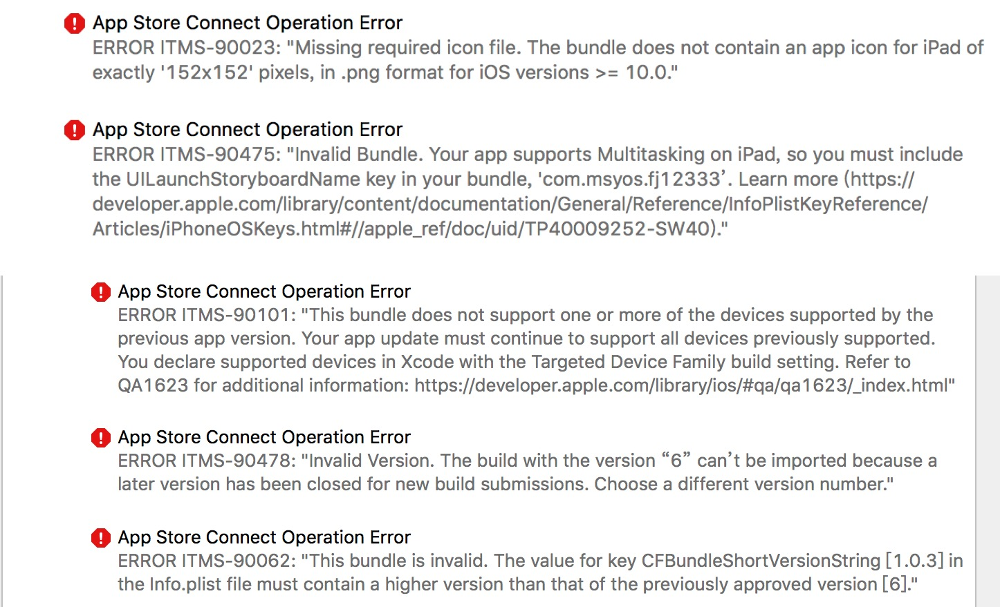
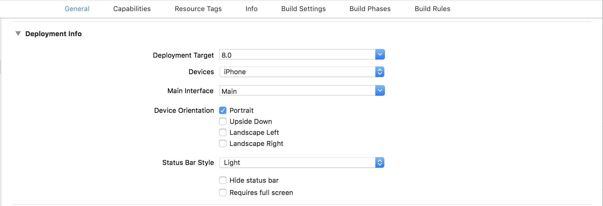
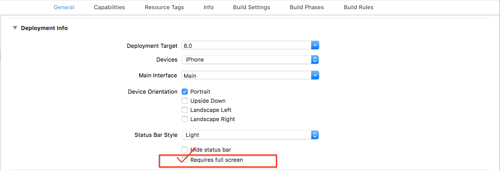

Xcode打包上传AppStore问题

1. ERROR ITMS-90101
ERROR ITMS-90101: “This bundle does not support one or more of the devices supported by the previous app version. Your app update must continue to support all devices previously supported. You declare supported devices in Xcode with the Targeted Device Family build setting.
与之前上传上架的应用的的Deployment Info中的Devices不一致
修改为一致即可

2. ERROR ITMS-90062
ERROR ITMS-90062: “This bundle is invalid. The value for key CFBundleShortVersionString [100] in the Info.plist file must contain a higher version than that of the previously approved version [100].”
原因及解决办法:提交新版本时 CFBundleVersion 和 CFBundleShortVersionString 都要大于上个版本才行
它的提示应该是你的 CFBundleShortVersionString 没有大于之前的版本号
3. ERROR ITMS-90478
同ERROR ITMS-90062构建版本问题
4. ERROR ITMS-90023
ERROR ITMS-90023: “Missing required icon file”
缺少iPad或者iPhone的app icon。添加即可。
5. ERROR ITMS-90475
ERROR ITMS-90475: “Invalid Bundle. iPad Multitasking support requires launch story board in bundle “
解决方法如下：
找到项目下TARGETS->General->Deployment Info将Requires full screen打上勾就OK了。
